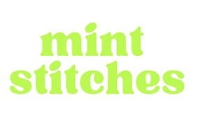

Trade Mark Journal No.2025/043 24 October 2025
UK00004240259 22 July 2025 (9,16,23,26,38,42)

- Class 9
- Downloadable graphic design templates: downloadable publications and books; downloadable recordings, webcasts, webinars and podcasts; educational, teaching or instructional apparatus and instruments; kits for teaching, instruction, training or education purposes containing electronic components; parts and fittings for all of the aforesaid Goods.
- Class 16
- Teaching materials; printed matter; printed publications; educational materials; study guides; instructional or teaching materials; embroidery design patterns; embroidery designs, patterns; patterns for embroidery.
- Class 23
- Yarns and threads, for textile use.
- Class 26
- Cross Stitch Kits.
- Class 38
- Provision of internet forums, web blogs and electronic bulletin boards; data and video streaming; arranging access to databases on the internet; provision of access to computer databases; receiving and exchanging information, text, sound, images, data and messages; message sending; providing online; interactive bulletin board for the transmission of messages among computer users concerning trading and the provision of services via online communication network, advice in relation to all the foresaid.
- Class 42
- Design and development of computer hardware and software; computer programming; installation, maintenance and repair of computer software; design, drawing and commissioned writing for the compilation of websites; creating, maintaining and hosting the web sites of others; embroidery, cross stitch, tapestry design and drawing services; technical assessments relating to design; maintaining websites; application service provider (ASP); application service provider (ASP) featuring software for receiving , transmitting and displaying designs, drawings of others; application service provider services regarding social networking software; provision of an Internal Platform for social networking services; application service provider (ASP) featuring software to enable or facilitate the uploading, downloading embroidery, cross stitch, tapestry design and drawing services, streaming, posting, displaying, blogging, liking, sharing or otherwise providing electronic media or information over communication networks; computer services, namely, hosting an interactive website featuring technology that allows users to manage their online designs and drawings; file sharing services, namely, hosting a website featuring technology enabling users to upload and download electronic files, computer services, namely creating a virtual online community for registered users to participate in discussions and engage in social and community networking; hosting of digital content online; hosting (providing) a website that features technology that enables gifts to charitable organisations; hosting and maintaining websites on the internet; design, creation, hosting and maintenance of websites for others; information and advisory services for all the aforesaid services.
Mint Stitches CIC
Representative: Hay & Kilner LLP